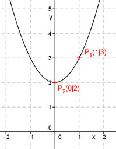

Aufgabe 46 Bestimmen Sie die quadratische Funktion der Form y = x2 + bx + c, die durch die Punkte P1(1|3) und P2(0|2) geht. Punktkoordinaten in y = x2 + bx + c einsetzen: x1 = 1 und y1 = 3 ergibt 3 = 12 + 1b + c 3 = 1 + b + c |-1 2 = b + c (1) x2 = 0 und y2 = 2 ergibt 2 = 02 - 0b + c ergibt c = 2 (2) In (1) eingesetzt: 2 = b + 2 |-2 b = 0 y = x2 + 2 